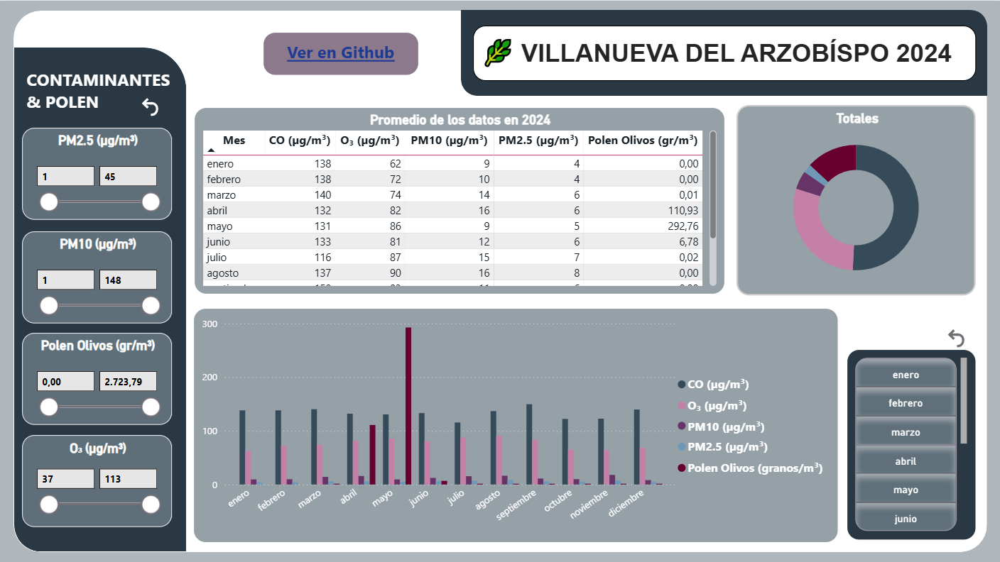

Álvaro Martínez Flores
Analista de datos · IA & Big Data
Programador BackEnd
Soy Álvaro, analista de datos orientado a transformar datos en información clara para la toma de decisiones dentro de la empresa. Me gusta trabajar con Python, SQL, Power BI y Excel, siempre con un foco en la limpieza de datos y la visualización de estos.
He trabajado en proyectos personales como StrikeWatch (detección de rayos por todo el mundo), AireVis (análisis de la calidad del aire de mi pueblo) y un proyecto de Excel Analytics(limpieza, analisis y dashboards). Mis mayores intereses son el análisis exploratorio, el analisis de los datos y la creación de dashboards que aporten valor real a la empresa.
Descargar CVPortafolio de proyectos

AireVis

Excel
Últimas certificaciones
Especialización en IA & BigData
Entidad: Digitech
Año: 2025
Nota media: 8
Grado superior en Desarrollo de Aplicaciones Web
Entidad: IES Mar del Alborán
Año: 2024
Nota media: 7